A mirror, a still lake and a butterfly all show the same shape flipped over. Today we find exactly where each point of a reflection lands, and name the mirror line.
By the end you’ll know…
A reflection is specified by a mirror line, and every point of the image is the same perpendicular distance from that line as its object point, on the opposite side.
A point on the mirror line does not move.
Mirror lines are given as equations such as ,, and
A reflection preserves length and angle, so the image is congruent to the object, but the sense is reversed.
By the end you can
G3Reflect a shape in a given mirror line, including the lines and
G4Construct and state the equation of the mirror line, given a shape and its image.
Work down the page at your own pace. Write every answer in your book first, then click to check it.
01
Do Now
About 5 minutes
1
Write down the equation of the vertical line through
2
Write down the equation of the horizontal line through
3
Find the point halfway between and
4
Reflect the point in the line
Remember these?
LAST LESSONTranslate the point by .
LAST WEEKDoes terminate or recur?
has no prime factor but and so it terminates:
LAST TERM
is shared in the ratio : How much is the larger share?
LAST YEAR
An L-shape is a cm by cm rectangle with a cm by cm square cut from one corner. Find its area.
cm²
02
Learn
Read each card, then follow the worked examples one step at a time.
The same distance on the other side
Each point lands the same distance from the mirror, on the other side. Measure at right angles to the mirror line. The image faces the other way.
In a reflection every point lands the same distance from the mirror line, on the other side, measured at right angles. A point on the mirror line does not move, and the image faces the other way.
Naming a mirror line
A vertical line is = a number. Every point on it has that x-coordinate. A horizontal line is = a number.
A vertical line is = a number, because every point on it has that x-coordinate. A horizontal line is = a number.
The lines and
Reflecting in swaps the coordinates: goes to Reflecting in swaps them and changes both signs.
Reflecting in swaps a point's two coordinates, so goes to Reflecting in swaps them and changes both signs, so goes to
Reflection: fold along the mirror
WORKED EXAMPLE A
In the line reflect the flag.
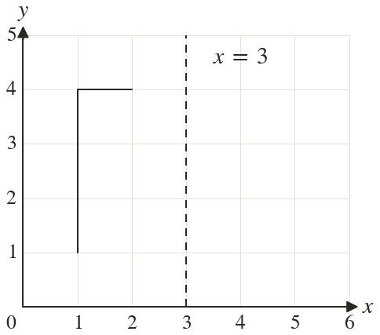
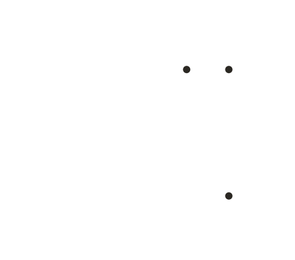
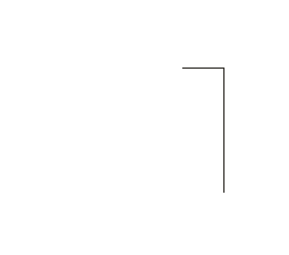
Mirrorthe vertical line through on the x-axis
Distancesthe foot is left of the mirror, so its image is right, at
Imagefoot top end of the flag
WORKED EXAMPLE B
Reflect the flag in the line
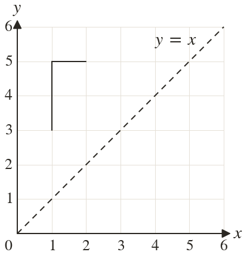
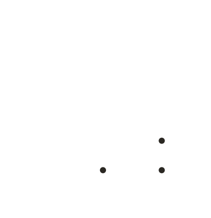
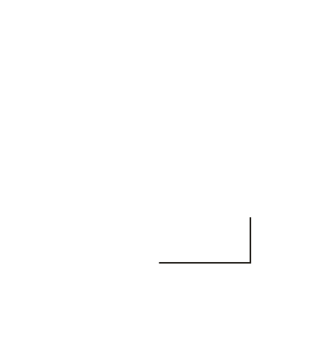
Rulereflecting in swaps each point's coordinates
Points to to to
Checkthe image lies on its side below the mirror, facing the other way
YOUR TURN · a
Reflect the point in the line
Hint. Follow the worked example: Mirror → Distances → Image
YOUR TURN · b
Reflect the point in the line
Hint. Follow the worked example: Rule → Points → Check
03
Check your understanding
Pick an answer. If it's wrong, the feedback tells you which mistake it was.
Reflect the point in the line
Not quite. is above the line, so the image is below it:
Yes. is above so the image is below it:
Not quite. Reflect in not the x-axis. is above, so go below.
Not quite. is a horizontal line, so the point moves up or down, not across.
Reflect the point in the line
Yes. Reflecting in swaps the coordinates: becomes
Not quite. Reflecting in swaps the coordinates:
Not quite. Reflect in not the x-axis. Swap the coordinates.
Not quite. Swapping and changing both signs is For just swap:
Reflect the point in the line
Yes. is left of so the image is right of it:
Not quite. is a vertical line, so the point moves across, not up or down.
Not quite. Reflect in not the y-axis. is left of it, so go right.
Not quite. Measure from the mirror line: is left of so go to
04
Practise
mark as you go
Checkpoint.Show your teacher before you go on
1.
Draw the line on a grid.
Hint. Follow the worked example: Mirror → Distances → Image
The vertical line through on the x-axis
2.
Reflect the triangle in it. Write the image's corners.
Hint. Follow the worked example: Mirror → Distances → Image
Reflect the triangle in the line Write down the corners of the image.
Hint. Follow the worked example: Mirror → Distances → Image
and
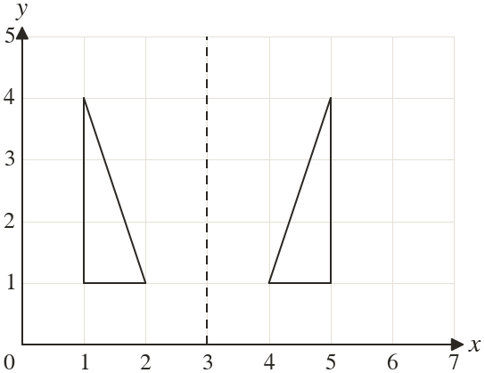
2
Reflect the triangle in the line Write down the corners of the image.
Hint. Follow the worked example: Mirror → Distances → Image
Swap each pair: and
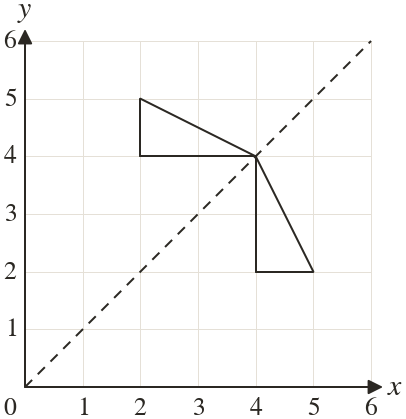
3
Reflect the point in the line
Hint. Follow the worked example: Mirror → Distances → Image
right of the line, so left:
4
Reflect the point in the line Leo writes What is his mistake? Give the correct point.
Hint. Follow the worked example: Mirror → Distances → Image
He reflected in : is a horizontal line is above the line, so below Image:
5
Reflect the point in the line
Hint. Follow the worked example: Mirror → Distances → Image
Swap the coordinates:
EXT
The point (a, is reflected in the line and lands on Find a and
Hint. Follow the worked example: Mirror → Distances → Image
is right of so (a, b) is left and
05
Learn
Read each card, then follow the worked examples one step at a time.
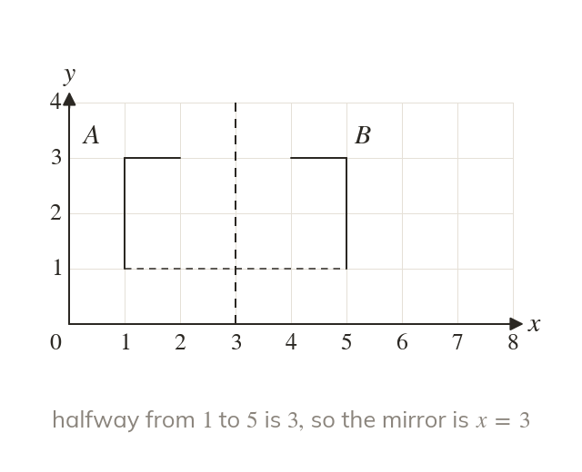
The mirror is halfway
The mirror line is halfway between each point and its image. Join one matching pair and find its midpoint.
The mirror line is halfway between every point and its image, at right angles to the line joining them. Join one matching pair and find the point halfway along.
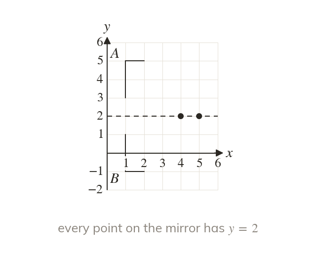
Name it by its equation
Read the points on the mirror line. If they share a y-coordinate, the mirror is = that number. If they share an x-coordinate, it is = that number.
Read the points on the mirror line. If they all share a y-coordinate the mirror is = that number; if they share an x-coordinate it is = that number.
WORKED EXAMPLE C
Find the mirror line that maps flag A onto B.
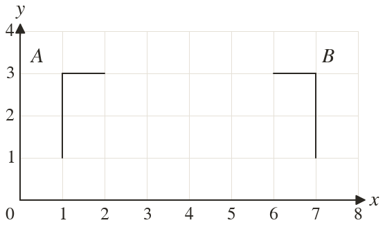
Join the foot of A, to the foot of B, Halfway along is and the mirror is vertical through it.
Mirror line
WORKED EXAMPLE D
Find the mirror line that maps flag A onto B.
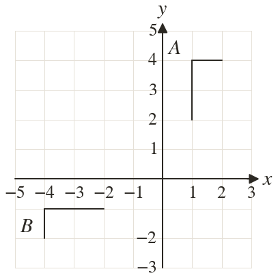
The foot goes to and the top goes to Each pair swaps its coordinates and changes both signs, which is the rule for
Mirror line
YOUR TURN · c
The point is reflected onto Find the equation of the mirror line.
Hint. Follow the worked example: Mirror line
YOUR TURN · d
The point is reflected onto Find the equation of the mirror line.
Hint. Follow the worked example: Mirror line
06
Check your understanding
Pick an answer. If it's wrong, the feedback tells you which mistake it was.
The point is reflected onto What is the mirror line?
Not quite. Only changed, so the mirror is a vertical line, = something.
Not quite. A line needs an equation. It's vertical, so
Not quite. The mirror is halfway between and :
Yes. Halfway between and is
Flag A's foot is at and its reflection, flag B, has its foot at What is the mirror line?
Not quite. The mirror sits halfway between the flags, not through one.
Not quite. Halfway is the middle value:
Yes. Halfway between and is
Not quite. Only changed, so the mirror is a horizontal line, = something.
Reflect the point in the line
Not quite. Swap the coordinates as well: goes to
Not quite. Reflect in not an axis. Swap and change both signs.
Not quite. For swap and change both signs:
Yes. For swap and change both signs: goes to
07
Practise
mark as you go
Checkpoint. Flag A: foot top end Flag B: foot top end Show your teacher before you go on
1.
Draw the mirror line and write down its equation.
Hint. Follow the worked example: Mirror line
halfway between and
1
The point is reflected onto Find the equation of the mirror line.
Hint. Follow the worked example: Mirror line
Halfway between and is :
2
The point is reflected onto Fin says the mirror line is What is his mistake? Find the mirror line.
Hint. Follow the worked example: Mirror line
The point moved up, so the mirror is a horizontal line, Halfway between and is :
3
The point is reflected onto Find the equation of the mirror line.
Hint. Follow the worked example: Mirror line
:
4
The point is reflected onto Find the equation of the mirror line.
Hint. Follow the worked example: Mirror line
The coordinates swap:
5
The point is reflected onto Find the equation of the mirror line.
Hint. Follow the worked example: Mirror line
The coordinates swap and both signs change:
EXT
(a, is reflected in onto and is reflected in onto Find a and
Hint. Follow the worked example: Mirror line
is right of so is below so
08
Exit ticket
On paper, on your own, then check
1
What happens to a point that lies on the mirror line?
It does not move.
2
Reflect the point in the line
3
The point is reflected onto Write down the equation of the mirror line.
Finished? Next lesson: 10.14.3 Rotating About a Point.
09
How did it go?
Be honest: it's just for you
For each skill, tap the one that is true for you today. Your Revise pages start with anything you mark Not yet.
Reflect a shape in a given mirror line, including the lines and
Construct and state the equation of the mirror line, given a shape and its image.
Your ratings are saved on this device only.
Practise more
After the lesson, or whenever you want more
Dr Frost
Log in, then search for a code to practise that skill.
153bReflect a shape in a vertical or horizontal line drawn on axes.
153cReflect a shape in a diagonal line drawn on axes.
279aDescribe a reflection in a vertical or horizontal line on a set of axes.